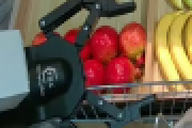
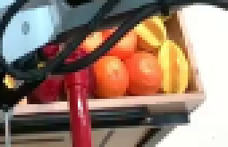
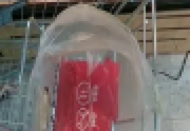
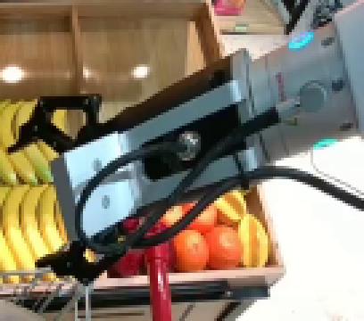
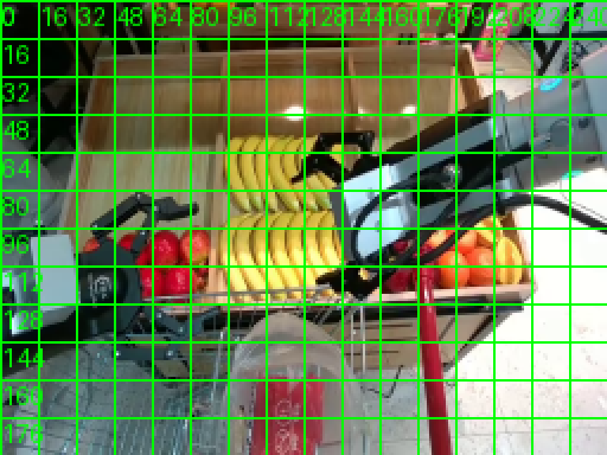
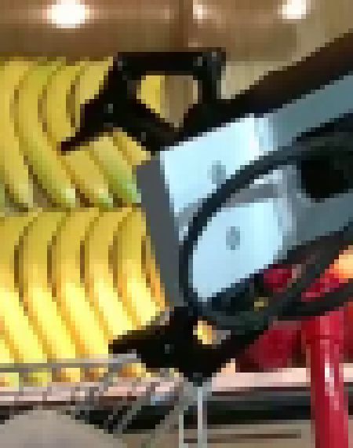
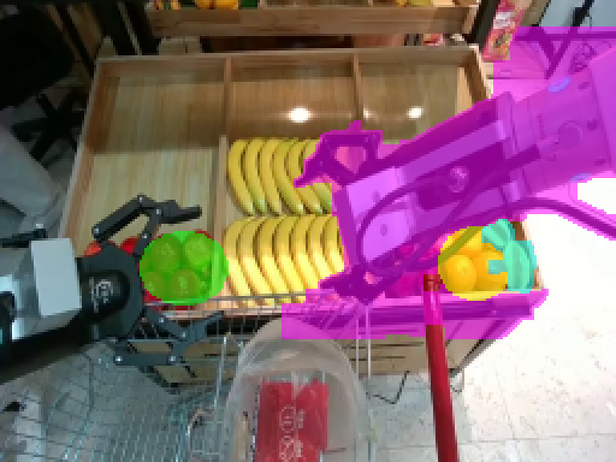
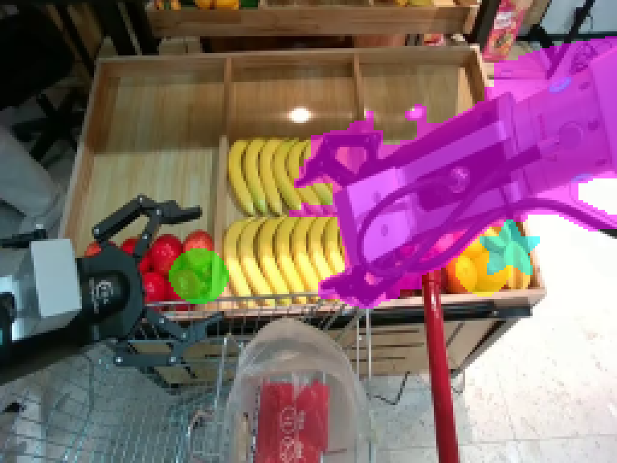

CODING AGENTS AS PIXEL WORLD MODELS
traex/Seed-2.1-Pro-0915 · common50_0000
尚未保存可播放视频
In a fixed robotic workspace, a rigid and physically consistent embodied robotic arm with high stability and no deformation proceeds to Use the right gripper to pick up a red apple, an orange, and a yellow star fruit from the display tray and place them into the plastic bag in the shopping cart.
failed逐轮保存的候选
回放视频、检查图与代码变化。
每份候选均可单独播放。实际图片检查记录在下方工具轨迹中。
可观测工具轨迹
实际执行的命令与返回图片。
命令 1exit 0
/bin/bash -lc 'cat prompt.txt'
命令 2exit 0
/bin/bash -lc 'cat GENERATION_RULES.md'
命令 3exit 0
/bin/bash -lc 'ls -la'
命令 4exit 0
/bin/bash -lc 'cat task_spec.json; cat artifact_io.py'
命令 5exit 0
/bin/bash -lc "python -c \"from PIL import Image; im=Image.open('first_frame.png'); print(im.size, im.mode)\"; python -c \"import numpy, PIL, cv2\" 2>&1 | head -5; python -c \"import scipy; print('scipy ok')\" 2>&1 | head -2"命令 6exit 0
/bin/bash -lc 'python -c "import cv2; print(cv2.__version__)"'
命令 7exit 0
/bin/bash -lc "mkdir -p .tmp/crops && python - <<'EOF'
from PIL import Image
im = Image.open('first_frame.png')
W,H = im.size
# crops: apples, bananas/gripper, oranges/starfruit, bag, right arm
regions = {
'apples': (20,85,110,145),
'center': (90,50,180,140),
'right_tray': (150,85,235,140),
'bag': (80,130,170,192),
'arm': (120,20,256,140),
'cart': (0,110,256,192),
}
for name,(x0,y0,x1,y1) in regions.items():
c = im.crop((x0,y0,x1,y1)).resize(((x1-x0)*3,(y1-y0)*3), Image.NEAREST)
c.save(f'.tmp/crops/{name}.png')
print('done')
EOF"命令 8exit 0
/bin/bash -lc "python - <<'EOF'
from PIL import Image, ImageDraw
im = Image.open('first_frame.png').convert('RGB')
g = im.copy()
d = ImageDraw.Draw(g)
for x in range(0,256,16):
d.line([(x,0),(x,191)], fill=(0,255,0), width=1)
d.text((x+1,1), str(x), fill=(0,255,0))
for y in range(0,192,16):
d.line([(0,y),(255,y)], fill=(0,255,0), width=1)
d.text((1,y+1), str(y), fill=(0,255,0))
g = g.resize((1024,768), Image.NEAREST)
g.save('.tmp/crops/grid.png')
# gripper zoom
im.crop((110,45,185,140)).resize((450,570), Image.NEAREST).save('.tmp/crops/gripper.png')
# full zoom 2x
im.resize((512,384), Image.NEAREST).save('.tmp/crops/full2x.png')
print('ok')
EOF"命令 9exit 0
/bin/bash -lc "python - <<'EOF'
import numpy as np, cv2
im = np.array(__import__('PIL.Image', fromlist=['Image']).open('first_frame.png').convert('RGB'))
R,G,B = im[...,0].astype(int), im[...,1].astype(int), im[...,2].astype(int)
def comps(mask, name, min_area=15):
n, lab, stats, cent = cv2.connectedComponentsWithStats(mask.astype('uint8'), 8)
print(f'--- {name}')
for i in range(1,n):
x,y,w,h,a = stats[i]
if a>=min_area:
print(f' bbox=({x},{y},{w},{h}) area={a} cent=({cent[i][0]:.1f},{cent[i][1]:.1f})')
red = ((R>140)&(R-G>55)&(R-B>55)).astype('uint8')
comps(red,'red/apple')
orange = ((R>170)&(G>70)&(G<180)&(B<110)&(R-G>35)&(R-B>80)).astype('uint8')
comps(orange,'orange')
yellow = ((R>190)&(G>170)&(B<140)&(np.abs(R-G)<60)).astype('uint8')
comps(yellow,'yellow')
EOF"命令 10exit 0
/bin/bash -lc "mkdir -p .tmp/probe && cat > .tmp/probe/masks.py <<'EOF'
import numpy as np, cv2
from PIL import Image
im = np.array(Image.open('first_frame.png').convert('RGB'))
R,G,B = im[...,0].astype(int), im[...,1].astype(int), im[...,2].astype(int)
H,W = R.shape
hsv = cv2.cvtColor(im, cv2.COLOR_RGB2HSV)
Hh,S,V = hsv[...,0], hsv[...,1], hsv[...,2]
# ---- fruit masks (local bboxes) ----
def fruit_mask(kind, box):
x0,y0,x1,y1 = box
m = np.zeros((H,W), np.uint8)
sub = (slice(y0,y1), slice(x0,x1))
if kind=='apple':
mm = (R>130)&(R-G>45)&(R-B>40)
elif kind=='orange':
mm = (R>160)&(G>65)&(G<185)&(B<120)&(R-G>30)&(R-B>70)
elif kind=='star':
mm = (R>180)&(G>160)&(B<150)&((R-G)<70)&((R-G)>-30)
m[sub] = mm[sub].astype(np.uint8)
return m
apple_box=(56,94,92,126); orange_box=(182,94,212,124); star_box=(198,90,222,120)
masks={}
for k,b in [('apple',apple_box),('orange',orange_box),('star',star_box)]:
m = fruit_mask(k,b)
m = cv2.morphologyEx(m, cv2.MORPH_CLOSE, np.ones((3,3),np.uint8), iterations=2)
m = cv2.morphologyEx(m, cv2.MORPH_OPEN, np.ones((2,2),np.uint8), iterations=1)
# keep largest comp, fill convex
n,lab,stats,_ = cv2.connectedComponentsWithStats(m,8)
if n>1:
i = 1+np.argmax(stats[1:,cv2.CC_STAT_AREA])
m = (lab==i).astype(np.uint8)
if k=='star':
m = cv2.dilate(m, np.ones((3,3),np.uint8), iterations=1)
cnts,_ = cv2.findContours(m, cv2.RETR_EXTERNAL, cv2.CHAIN_APPROX_SIMPLE)
filled = np.zeros_like(m)
cv2.drawContours(filled, cnts, -1, 1, -1)
if k"'!='"'star':
# ellipse-ish: intersect with ellipse fitted to bbox
ell = np.zeros_like(m)
x,y,w,h = cv2.boundingRect(filled)
cv2.ellipse(ell, (x+w//2,y+h//2), (w//2+1,h//2+1), 0,0,360,1,-1)
filled = ((filled|ell)>0).astype(np.uint8)
filled = cv2.bitwise_and(filled, ell)
masks[k]=filled
ys,xs = np.where(filled>0)
print(k, 'bbox', (xs.min(),ys.min(),xs.max(),ys.max()), 'area', filled.sum(), 'cent', (xs.mean().round(1), ys.mean().round(1)))
# ---- arm mask ----
arm = np.zeros((H,W), np.uint8)
x0,y0,x1,y1 = 118,12,256,140
sub = (slice(y0,y1),slice(x0,x1))
warm_wood = (R>140)&(G>105)&(B<125)&((R-B)>45)
yellow = (R>170)&(G>150)&(B<140)&((R-G)<80)
redfruit = (R>130)&(R-G>45)&(R-B>40)
dark = V<95
metal = (S<70)&(V>=95)&(V<225)
cyan = (B>150)&(G>140)&(R<170)&(B-R>20)
am = (dark|metal|cyan) & (~warm_wood) & (~yellow) & (~redfruit)
arm[sub] = am[sub].astype(np.uint8)
# restrict to components that connect to right edge or gripper zone
n,lab,stats,cent = cv2.connectedComponentsWithStats(arm,8)
keep=np.zeros_like(arm)
for i in range(1,n):
x,y,w,h,a = stats[i]
cx,cy = cent[i]
if a<8: continue
touches_right = (x+w)>=255
in_hand = (118<x<215 and 40<y<135)
if touches_right or in_hand:
keep[lab==i]=1
arm = keep
arm = cv2.morphologyEx(arm, cv2.MORPH_CLOSE, np.ones((5,5),np.uint8), iterations=2)
arm = cv2.dilate(arm, np.ones((3,3),np.uint8), iterations=1)
# fill holes
cnts,_=cv2.findContours(arm,cv2.RETR_EXTERNAL,cv2.CHAIN_APPROX_SIMPLE)
filled=np.zeros_like(arm)
cv2.drawContours(filled,cnts,-1,1,-1)
arm=filled
print('arm area', arm.sum())
# visualize
vis = im.copy()
ov = vis.copy()
ov[...,0]=np.where(arm>0,255,ov[...,0]); ov[...,1]=np.where(arm>0,0,ov[...,1]); ov[...,2]=np.where(arm>0,255,ov[...,2])
for k,col in [('apple',(0,255,0)),('orange',(255,255,0)),('star',(0,255,255))]:
ov[masks[k]>0]=col
vis = cv2.addWeighted(ov,0.55,vis,0.45,0)
Image.fromarray(vis).resize((768,576),Image.NEAREST).save('.tmp/probe/masks.png')
np.savez('.tmp/probe/masks.npz', arm=arm, apple=masks['apple'], orange=masks['orange'], star=masks['star'])
EOF
python .tmp/probe/masks.py"命令 11exit 0
/bin/bash -lc "cat > .tmp/probe/masks2.py <<'EOF'
import numpy as np, cv2
from PIL import Image
im = np.array(Image.open('first_frame.png').convert('RGB'))
R,G,B = im[...,0].astype(int), im[...,1].astype(int), im[...,2].astype(int)
H,W = R.shape
hsv = cv2.cvtColor(im, cv2.COLOR_RGB2HSV); Hh,S,V = hsv[...,0], hsv[...,1], hsv[...,2]
def ellipse_mask(cx,cy,rx,ry):
m=np.zeros((H,W),np.uint8); cv2.ellipse(m,(cx,cy),(rx,ry),0,0,360,1,-1); return m
# single-fruit target masks
apple = ellipse_mask(82,114,12,11)
orange = ellipse_mask(200,111,11,11)
# star fruit: hand polygon around the yellow star at ~(211,106)
star_pts = np.array([[211,92],[215,99],[222,99],[217,104],[219,112],[211,107],[203,112],[205,104],[200,99],[207,99]],np.int32)
star=np.zeros((H,W),np.uint8); cv2.fillPoly(star,[star_pts],1)
star=cv2.dilate(star,np.ones((3,3),np.uint8),1)
# ---- arm: color mask intersected with silhouette polygon ----
x0,y0,x1,y1 = 118,12,256,140
warm_wood=(R>140)&(G>105)&(B<125)&((R-B)>45)
yellow=(R>170)&(G>150)&(B<140)&((R-G)<80)
redfruit=(R>120)&(R-G>45)&(R-B>40)
dark=V<95; metal=(S<70)&(V>=95)&(V<225); cyan=(B>150)&(G>140)&(R<170)&(B-R>20)
am=((dark|metal|cyan)&(~warm_wood)&(~yellow)&(~redfruit)).astype(np.uint8)
roi=np.zeros((H,W),np.uint8); roi[y0:y1,x0:x1]=1
am&=roi
poly=np.array([[128,50],[150,46],[172,44],[196,30],[230,20],[256,16],[256,92],
[220,98],[195,108],[172,118],[152,126],[134,122],[124,112],[120,92],[124,66]],np.int32)
pm=np.zeros((H,W),np.uint8); cv2.fillPoly(pm,[poly],1)
am&=pm
am=cv2.morphologyEx(am,cv2.MORPH_CLOSE,np.ones((5,5),np.uint8),iterations=2)
am=cv2.dilate(am,np.ones((3,3),np.uint8),1)
cnts,_=cv2.findContours(am,cv2.RETR_EXTERNAL,cv2.CHAIN_APPROX_SIMPLE)
arm=np.zeros_like(am); cv2.drawContours(arm,cnts,-1,1,-1)
# keep only components of decent size connected toward hand/right
n,lab,stats,cent=cv2.connectedComponentsWithStats(arm,8)
keep=np.zeros_like(arm)
for i in range(1,n):
x,y,w,h,a=stats[i]
if a>=25 and (x+w>=200 or (x<175 and y<120)): keep[lab==i]=1
arm=keep
print('arm area',arm.sum(), 'apple',apple.sum(),'orange',orange.sum(),'star',star.sum())
# inpaint test: arm + all three fruits
hole=((arm|apple|orange|star)>0).astype(np.uint8)
base=cv2.inpaint(im,hole,5,cv2.INPAINT_TELEA)
Image.fromarray(base).resize((768,576),Image.NEAREST).save('.tmp/probe/base_inpaint.png')
ov=im.copy(); mix=ov.copy()
mix[arm>0]=[255,0,255]; mix[apple>0]=[0,255,0]; mix[orange>0]=[255,255,0]; mix[star>0]=[0,255,255]
vis=cv2.addWeighted(mix,0.55,ov,0.45,0)
Image.fromarray(vis).resize((768,576),Image.NEAREST).save('.tmp/probe/masks2.png')
np.savez('.tmp/probe/masks2.npz',arm=arm,apple=apple,orange=orange,star=star,base=base)
EOF
python .tmp/probe/masks2.py"视觉工具实际返回图片 1

视觉工具实际返回图片 2

视觉工具实际返回图片 3

视觉工具实际返回图片 4

视觉工具实际返回图片 5

视觉工具实际返回图片 6

视觉工具实际返回图片 7

视觉工具实际返回图片 8

视觉工具实际返回图片 9

保存候选 0 份；完成命令 11 次；可验证图片返回 9 张。原始 API 响应与完整日志保留在本地。